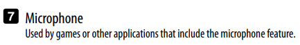
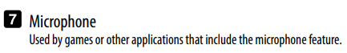
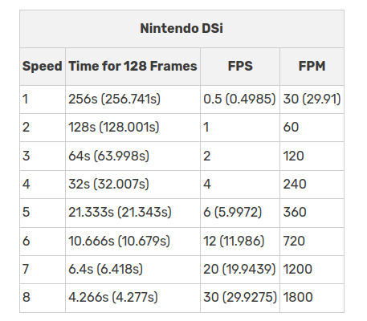

The DSI, Flipnote Studio, and The Quest For The Best Mic Quality.
The DSi is a funny little guy. Anybody who has used the DS family of devices are acutely aware of how actually terrible the microphone for the devices are. They peak easily, and have a habit of picking up echos better than it can pick up voices. 
Flipnote Studio is an interesting suite as an animation tool. It's simplicity was it's key to amazing creative animations. Hell, I've made flipnotes of my own. It's quite fun, actually.
Facts are, flipnote is great, However... There is one major issue holding them back. And that is...
Drumroll Please...
This little fucker. The OEM microphone that comes with the DSi. As mentioned beforehand, the microphone is far from quality. Let me explain.
The Importance of Gain
In the field of Audio, there is a term called "Gain", or the Sensitivity of a microphone. It's actually part of the secret to good microphone quality. It truly wouldn't matter if you used an AT2020, a Rock Band Microphone, or a Logictech webcam microphone, if the gain is out of whack, it's going to sound terrible. In this case, you can actually make almost any device sound good with the twist of a singular nob.The microphone is seen clipping, when all I said in a hushed tone was "Test".
Initial Solutions
Flipnote creators have been utilizing Macgyver ass solutions in order to obtain the best and most optimized audio quality.
The Audacity Method
A common Macgyver method for those who don't have spare audio equipment laying around is known as the Audacity Method, and is utilized by creators like CerealBowlby in their titular series The June Archive. The Audacity Method involves recording and slowing down the audio you recorded to 50%, and then in the Flipnote Suite, select Speed 5, record the audio, and then select Speed 6. The reason why this method equates to high audio quality is because of Bitrate. You are squeezing more data for the DSi's microphone that would normally not be picked up, giving a higher bitrate than the microphone would typically be capable of, and thus higher quality audio. There are downsides, typically in that you won't be able to make Flipnotes longer than 30 seconds, because of Flipnote's Music (Main Audio Channel) Minute Rule, where the maximum time allowed is a Minute in any framerate. If you record a minute of your favorite song and then change the Speed settings to run faster, you would not be able to record more audio.

Wav_PPM
Another quite uncommon method is the Wav_PPM method by NIL. WAV_PPM is an experimental python script that uses the Pycryptodome library to automatically import a WAV file with an easy to understand interface. There are issues when it comes to support on Linux, and music (which is the primary reason for this blogpost) doesn't have the best track record with the volume. The benefits are that the script can maximize bitrate through having the audio appear from different speeds automatically, meaning it does the Audacity Method automatically.Perfect for people who are okay with wrangling with currently finicky software. If development keeps resuming, I do think this would be the best way software-wise to get high quality audio with Flipnotes.
Please note that in order to get Wav_PPM working you will need to export your Flipnote Studio Private Key. I would recommend using dsi_srl_extract, however literally Every Single Link i found of it is dead.
If I was to recommend an area to look, it would be to dump the DSi NAND through MelonDS's NAND Dumper, and then use No$GBA to read the memory addresses of Flipnote Studio as you're accessing it.
But what if there was another way...
Another Way?
Please be aware that this is Mostly Theoretical. There is a prototype in development, however extensive testing has been done to ensure this concept will work.
A seldom discussed part of the DS/DSi family which is the key to this problem is actually the Aux and Microphone port. Yes, you heard me right. Microphone port.A behavior that is almost never discussed by anybody in the field of technology is how versatile the modern Aux cable is. It's almost impossible to imagine but at some point Aux wasn't specified to carry headphones. Afterall, they couldn't really power anything of significance.
However, it changed with the addition of the introduction of Audio to the AUX standard, which occurred after the development of the DSi. (In fact, you could stream audio directly from a computer to a 3ds!!)
{kind=link}
For this demonstration, I would like to introduce a good friend of the blog, The Toshiba Satellite L305 running Windows 7!
In Layman's Terms, The idea is to do a version of the diagram below, where instead of MelonDS's mic intercepting the audio output as an input, it's an actual DS/DSi that's intercepting the audio output as an input
{kind=link}
This project was largely done in association with Friend Of The Blog, ioi_xd. The initial concept was to take the few remaining DSi Mono Headsets and convert them into straight up Aux Cables.
We quickly realized how truly unscalable this concept is. At some point we're going to run out of DS Headsets to gut the connectors from. So, back to the cutting board we went.
This blogpost is currently a work in progress, Updates will arrive on a semi-regular basis.